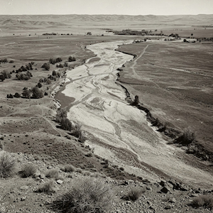

Dry Oar Rafting
Dry oar rafting was founded in 1940's as a waste management company for the INL. we have since changed out focus to rafting. This is a family owned company that has gone through many changes.
Dry oar rafting was founded in 1940's as a waste management company for the INL. we have since changed out focus to rafting. This is a family owned company that has gone through many changes.
Founded in 1942 by Sylas and Elan Blackwood as part of The Manhattan Project. It was origionally a waste management company for the INL. In 1950 the company made a drastic change and started offering rafting trips on the Lost River. Eventually the river dried up and the company changed its name to Dry Oar Rafting. We specialize in a unique type of rafting that is unlike any other.